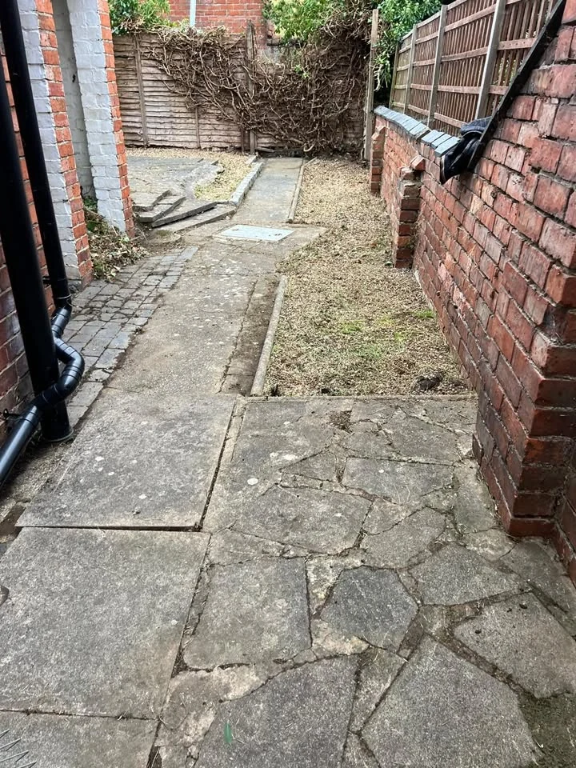
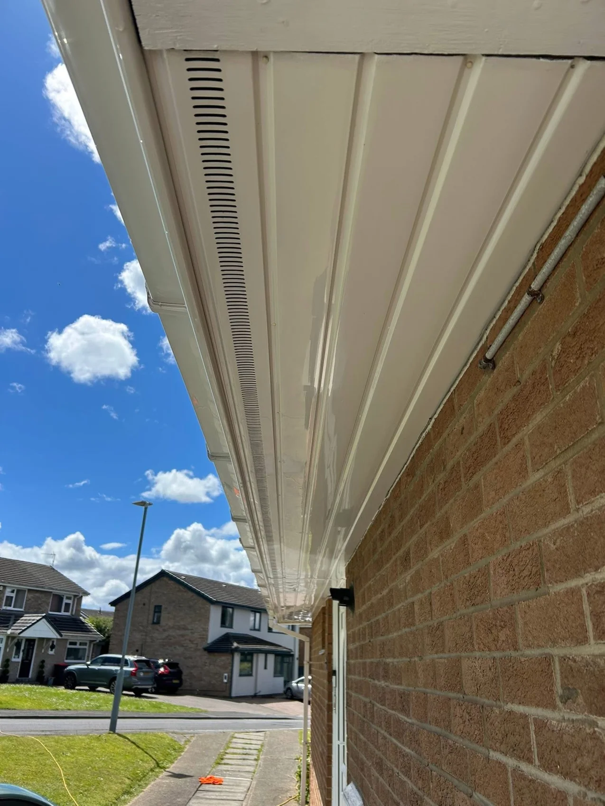
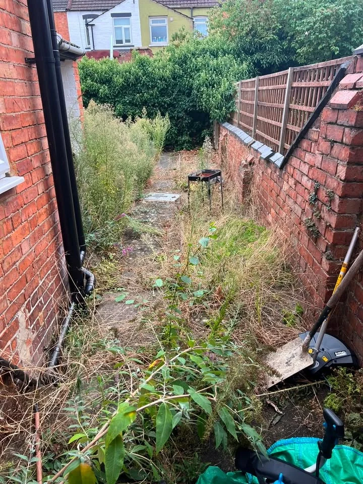
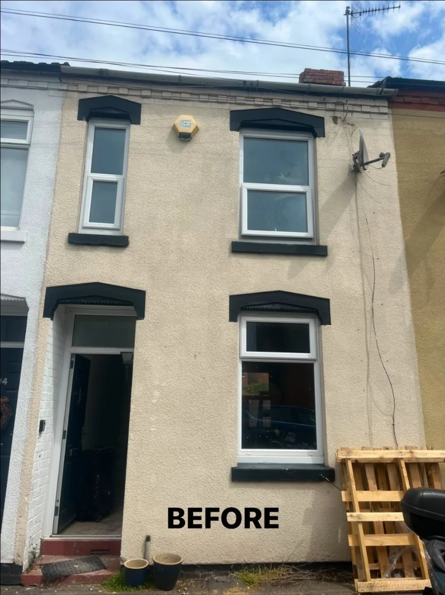
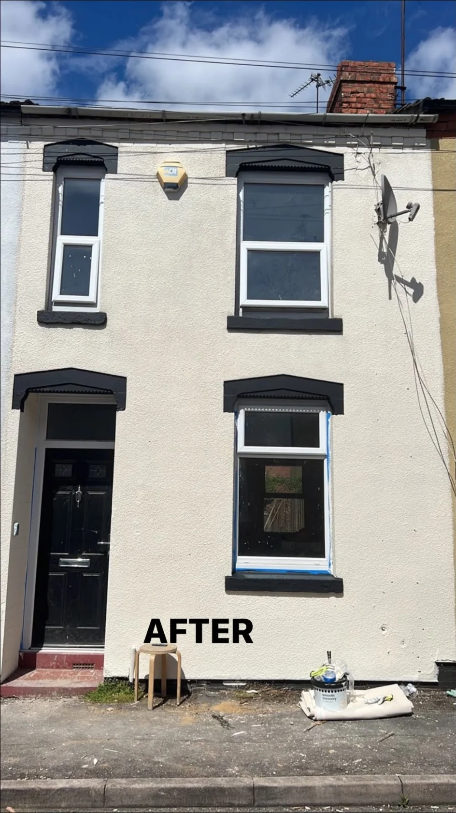
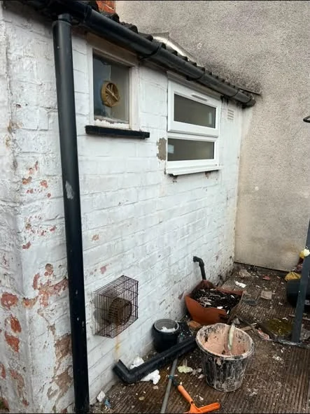
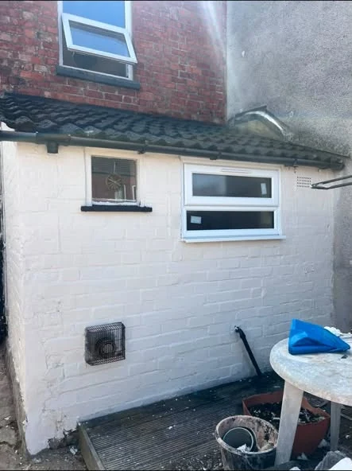
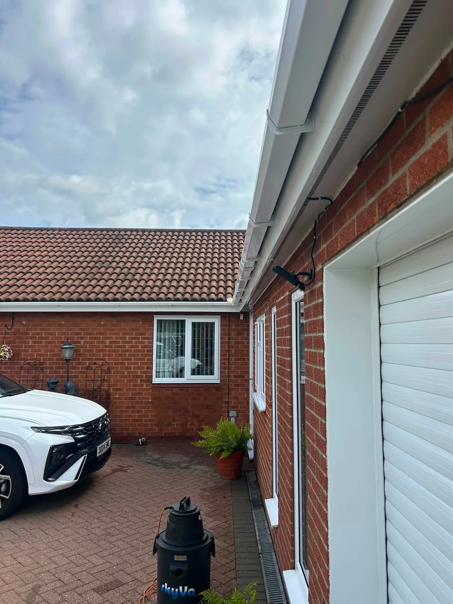

Gutter ClearingClearing blockages and accumulated debris
Patio CleaningRestoring outdoor surfaces and pathways
Garden TidyingLawns, weeds and overgrown outdoor areas
Exterior CleaningRefreshing the outside of your home
TRUE CLEAN SERVICES
Care for your property. Pride in every job.
From clearing blocked gutters to restoring patios and tidying lawns, True Clean Services helps keep your home and outdoor space looking cared for.
Request a quote →

GARDEN TIDYING
Reclaim your outdoor space.
Thick weeds and overgrowth can hide a useful path. This garden was cleared to reveal the walkway again, making the space easier to access and maintain.
Discuss your garden →
RECENT WORK
Small details. A visible difference.
Exterior transformations and garden clearing, with before and after photographs from the supplied jobs.





BEFORE & AFTER
A fresher exterior. A better first impression.
The same property before and after exterior cleaning. Both photographs are shown with their original comparison labels intact.
Request your quote →HOME & GARDEN CARE
A tidier space starts with the right care.
True Clean Services takes pride in practical cleaning and tidying work, from clearing blocked gutters to restoring patios and tackling overgrown outdoor areas.
01
Practical help
Support with the exterior jobs that are easy to put off.
02
Attention to detail
Care for the finish, whether it is a cleared path or a freshly cleaned exterior.
03
Clear communication
Tell us what needs doing and we will discuss the work with you.
REQUEST A QUOTE
Tell True Clean Services what needs cleaning.
Complete the form and it will open WhatsApp with your project details ready to send. This is a quote request, not a confirmed booking.